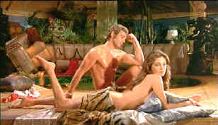

| Le Magnifique/ B, B |
| Image/1973/A 1.85 |
Writer/Director Philippe de Broca knows his
way around broad comic territory. He sets the scene in a distinctive and
upbeat fashion immediately establishing tone. De Broca throws down a comic
gauntlet, announcing with style that you have to accept the silly conceits
to enjoy his movie. I decided to go with the flow and was generously
rewarded. One thing for sure, Le Magnifique delivers a bloody funny
opening.
|
 |
|
Not a bad fantasy. ©Image
|
Super agent Bob Saint-Claire is called in to
straighten out a spy mess when a telephone booth tries flying and sailing simultaneously.
The bad guys crop up everywhere, in every shape and size imaginable, but
Saint-Clare dispatches them faster than a speeding fertile imagination.
With a beautiful babe cuddled beside him in his convertible, Bob is the
epitome of secret agents, with enough exaggerated kinetic mannerisms to
field a comic kit bag.
After all the secret agent posturing, Le Magnifique
puts on the breaks and adds a comic layer making the espionage a story
within the story. Sitting at a typewriter in his ramshackle Paris
apartment Francois Merrin deliriously attacks the keyboard with two
fingers creating the manic adventures of Bob Saint-Clare. At first,
beautiful neighbor Christine supplies inspiration from afar, but bon
chance brings them together. A subplot involving Francois' editor Charron
trying to put the make on Christine isn't very funny. Le Magnifique
tries hard to find humor in every corner, however the film works best in
the fantasy world of Bob Saint-Claire. Nice pacing between the writer's
fiction and his own story. Characters from Merrin's life are integrated
with good comic effect into his fiction.
Jean-Pierre Belmondo dishes out the silly material with
style while overplaying Saint-Clare to delirious comic effect. Jacqueline
Bisset is absolutely stunning. She can sway those hips till the cows come
home.
Director Philippe de Broca's comic rhythms are
very good. He has a great fell for sight gags and he even follows up on
the sight gags with layered dialogue. De Broca was also responsible for
great super agent spoof That Man from Rio made nine years before Le
Magnifique, also starring Belmondo.
Production design is a thorough comic delight
right down to the color of Belmondo's cigarettes. Dig that early
projection television. The settings are beautiful enough to make you want
to hop a plane for lush climes. It's only a momentary glance, but
there's a great looking traffic jam that must have taken hours to set up.
Costume design provides its own comic moments. Some of the outfits Bisset
wears show her off as a hot tropical fruit with peal appeal.
Colors are absolutely lovely. A river of blood flows
with rice corpuscle viscosity. Very rich. Grain is exhibited in tight fine
patterns. Good black levels, though slightly high in a couple of
scenes. The transfer exhibits a consistently good look. Transfer
packs plenty of punch from the clean source material. A few scenes are a
touch on the soft side. Yellow removable English subtitles are extremely
sharp and easy to read. Mono soundtrack is reasonable. There's a little
squelching in the mid-range horns, but it is consistently clean. Reviewed on a Sharp 9000VX DLP Projector
|
|
|
|

Selections from the Feature
Archive include articles on Akira Kurosawa, Frank Darabont, Blonde Bimbos, Hollywood Street Gangs, or Vietnam: The Hollywood Pariah, and many
more....
Anthony Quinn 
A larger than life screen presence brought joy to audiences for six
decades. Anthony Quinn had a rare zest for life that was
invested in many of his roles. Long live his memory. Click on the image
for a look at his career.


The Movie Poster
Archive include extensive poster images from the films of stars like Susan
Hayward, Kirk Douglas, Katharine Hepburn and many more. Our featured
star is Robert Mitchum

The Court Jester/A,A-

Quite simply one of the funniest comedies ever made and the
transfer is gorgeous.

 Brad Lang
continues to add more interesting material to the extensive collection at Classic Movies.
Everything from actors and actress to your favorite directors is linked at
the site. Brad Lang
continues to add more interesting material to the extensive collection at Classic Movies.
Everything from actors and actress to your favorite directors is linked at
the site.
Werner Herzog Film
![[ Werner Herzog ]](../images/werner-herzog.jpg)
The Web site of director Werner Herzog includes lots of great material. A
perfect stop for anyone who admires his films.

Comprehensive DVD review database. Easy to use interface with
specific region searches.
|
Around The World In Eighty Days
|
|
Home Theater Talk is sponsoring a delightfully ingenious contest
called Around the World in Eighty Days. Conceived by forum member
Jim Long, the contest has a double aim; watching foreign films and
sharing them. The general idea is that you watch some films from
around the world and keep an on-line diary of them for others to
benefit. The reviews will be judged at the end of the contest and
the winner will receive a 600 dollar gift certificate to spend at
any of Home Theater Talk's sponsors! You win by seeing some fine
films and you have the chance of winning the prize of your choice
as well. See the "Armchair Director" forum area for the
details. We are also giving away an Adire Dharman subwoofer!
That's right a free Dharman to the lucky winner. This contest is
posted in the "Home Theater Talk" forum area. Go there
for all the details. Enter the contest or just join in the fun by
reading the diary entries of these cinematic world travelers.
|
|